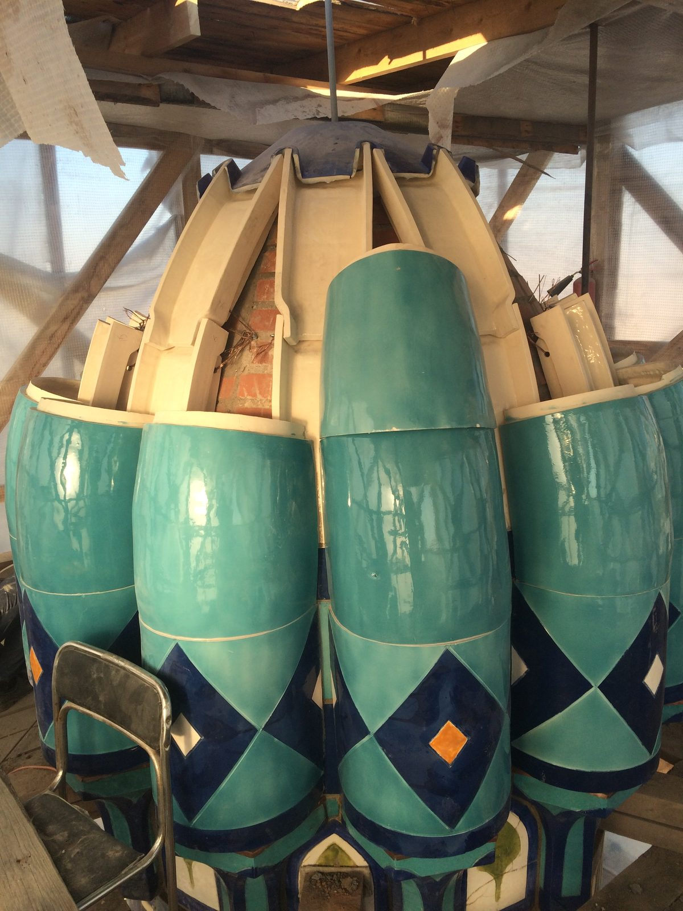

Проект ведут одним циклом — от методики и технологических проб до изготовления, монтажа и авторского надзора.
Обследование подлинника
«Паллада» реставрирует фасадную, интерьерную и печную керамику на объектах культурного наследия. Работа начинается с обследования и исследования подлинника: специалисты фиксируют состояние, причины разрушения, состав материала, размеры, рельеф и цвет.
Реставрация и восполнение утрат
Сохранившиеся элементы расчищают, укрепляют и реставрируют. Если часть декора утрачена, подлинные детали и архивные материалы становятся источниками для воссоздания. Проект ведут одним циклом — от методики и технологических проб до изготовления, монтажа и авторского надзора.
От подлинника к восполнению

